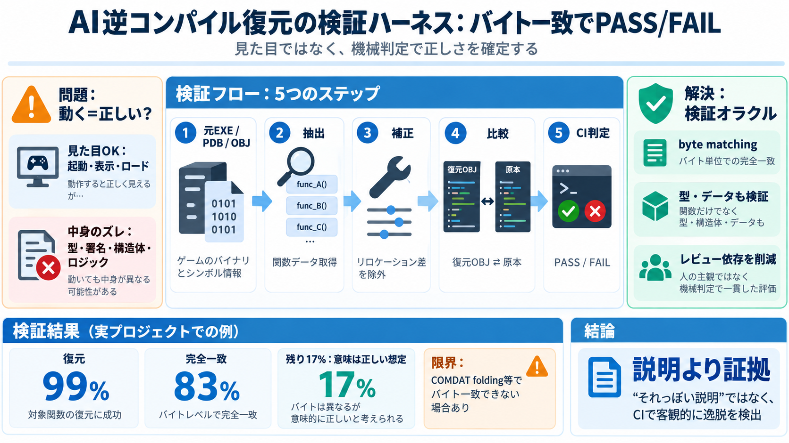

How to Build an AI Agent: Complete Step-by-Step Guide for 2026
Limitations: Complex reasoning and dynamic planning are challenging, limited control over LLM behavior and prompting, po…

大量の自律作業でゲームをC++へ再構築するとき、成果の“見た目”だけでは不十分です。鍵は、正しさを機械で判定する検証ハーネスです。
起動してメニューやマップが出れば品質が高いように見えます。しかしセマンティクス（意味論）は一致していないことが多いのが実情でした。
起動・表示・ロードが通る（“進捗が見える”）
関数署名、型、構造体レイアウト、ロジックの意味がズレる
レビュー担当エージェントはバグ検出には役立ちますが、何を“正しい”とするかの受け入れ基準が曖昧だと一貫判定が崩れます。
復元した関数が原本と同一であることを、機械的にチェックする「検証オラクル」を導入します。これでPASS/FAILをCIへ自動化できます。
元EXE / PDB / OBJ
復元OBJ ⇄ 関数データ比較
単なる見た目の一致ではなく、バイト単位の一致を狙います。ただし配置依存の差は“除外して”、意味に関わる整合性を残します。
元バイナリの関数データを取得
リロケーション差を考慮して除外
シンボルとオフセット整合性で確認
関数だけでなく、データや型にも同様の検証を拡張しました。セマンティクスのズレが起きる場所を広く潰す狙いです。
呼び出し先・配置整合性
構造体レイアウト・型整合
CI（継続的インテグレーション）で自動判定できるようになり、レビュー負担を減らしつつ品質を安定させました。
人の判断＋説明の説得に依存
機械判定で逸脱を検出
最終的に99%の関数が復元され、83%はバイト完全一致。残りはバイト一致しないがセマンティクスが正しいと判断されています。
99%（関数カバレッジ）
83%（byte perfect）
17%（意味は正しい想定）
「コンパイルできる」「起動できる」は形式的な動作です。正しい復元は、関数の型・呼び出し規約・データ配置・ロジックの意味が原本と一致している状態です。
コンパイル通過／起動通過
意味（semantics）の一致
検証は強力ですが、無条件の完全一致を常に保証できるわけではありません。非決定的要素（例：COMDAT foldingなど）で、バイト一致できないケースが残ります。
正しさを客観化（PASS/FAIL）
バイト一致できないが意味が正しい領域
厳格な検証があるほど、能力の高いモデルに依存しなくても高品質が出せます。フィードバックが明確になり、学習・修正が効率化します。
モデル能力依存で品質が揺れる
検証結果が修正ループを固定化
“それっぽい説明”で誤りが通る誘惑を、機械判定で封じます。これはオーケストレーションを性能最適化ではなく正しさの検証へ寄せる発想です。
コメントで説得
検証オラクル
CIで確定
一般的なオーケストレーションは実行ログ監視や通知で運用性を高めます。本記事は、復元の“意味”を直接に機械で検証することが主眼です。
ログ・失敗通知・再実行
byte matchingでPASS/FAIL
以下は、ユーザー提示文（記事要約・Points・FAQ・意見・過去履歴・検索メモ）に基づくデッキ化です。
Limitations: Complex reasoning and dynamic planning are challenging, limited control over LLM behavior and prompting, po…
Our AI Agents Development Practice offers the following end-to-end services: Model Orchestration Multi-Model AI Integ…
### 9. Vellum Vellum is an LLM ops platform with first-class agent-orchestration features: a no-code workflow builder, …
Flexible patterns for group chat and hierarchical setups. Integration with Azure services and various LLMs. Tools for …
On average, market estimates suggest that the autonomous AI agent market could reach US$8.5 billion by 2026 and US$35 bi…